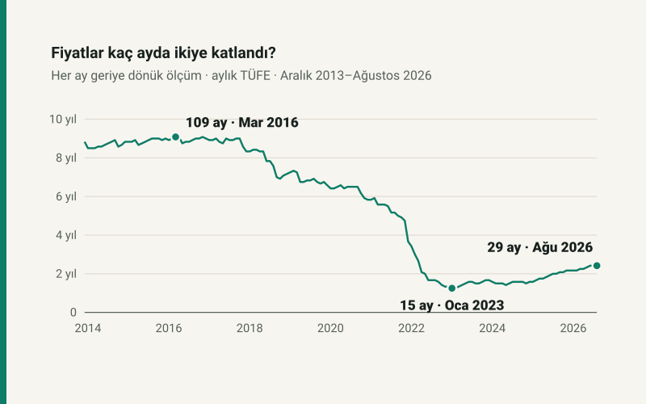

Kısa cevap
Döneme göre çok değişiyor. Aralık 2013 ile Aralık 2016 arasında biten dönemlerde fiyatların ikiye katlanması 106–108 ay sürdü. En kısa süre, Ocak 2023'te biten dönemde ölçüldü: 15 ay. Ağustos 2026 itibarıyla fiyatlar son 29 ayda ikiye, son 47 ayda dört, son 64 ayda sekiz katına çıktı.
Yıllık enflasyon oranı bu süreyi gecikmeli gösterir. Aralık 2021'de yıllık %36,08'lik oran "fiyatlar 27 ayda ikiye katlanır" diyordu; gerçekte o aya kadar ikiye katlanma 44 ay sürmüştü. Aralık 2024'te ise tersi: oran 23 ay diyordu, gerçek süre 19 aydı.
Ölçü: geriye doğru ikiye katlanma süresi
Bir ay seçin ve geriye doğru yürüyün: fiyat düzeyinin o ayın tam yarısı olduğu en yakın ay kaç ay önceydi? Bu yazıda "ikiye katlanma süresi" bu sayıdır. Tanım geriye bakar; olmuş bir şeyi ölçer, tahmin içermez.
Hesap, TÜİK'in aylık tüketici fiyat değişimlerinin zincirlenmesiyle yapıldı. Seri Ocak 2005'te başladığı için ölçü ancak fiyatların o tarihten bu yana ikiye katlandığı aydan itibaren tanımlı: ilk kez Aralık 2013'te.
On üç aralık, bir ağustos
| Ay | Ölçülen süre | Yıllık TÜFE | Yıllık oranın ima ettiği |
|---|---|---|---|
| Aralık 2013 | 106 ay | %7,40 | 116,5 ay |
| Aralık 2014 | 106 ay | %8,17 | 105,9 ay |
| Aralık 2015 | 108 ay | %8,81 | 98,5 ay |
| Aralık 2016 | 108 ay | %8,53 | 101,6 ay |
| Aralık 2017 | 100 ay | %11,92 | 73,9 ay |
| Aralık 2018 | 86 ay | %20,30 | 45,0 ay |
| Aralık 2019 | 79 ay | %11,84 | 74,3 ay |
| Aralık 2020 | 70 ay | %14,60 | 61,0 ay |
| Aralık 2021 | 44 ay | %36,08 | 27,0 ay |
| Aralık 2022 | 16 ay | %64,27 | 16,8 ay |
| Aralık 2023 | 20 ay | %64,77 | 16,7 ay |
| Aralık 2024 | 19 ay | %44,38 | 22,6 ay |
| Aralık 2025 | 26 ay | %30,89 | 30,9 ay |
| Ağustos 2026 | 29 ay | %31,51 | 30,4 ay |
Son sütun "72 kuralının" kesin hâlidir: yıllık oran π ise fiyatlar ln 2 ÷ ln(1 + π) yılda ikiye katlanır. Bu hesap, oranın sabit kalacağını varsayar. İki sütun arasındaki fark, o varsayımın ne kadar tuttuğunu gösteriyor.
Yıllık oran neden gecikmeli?
Yıllık oran yalnızca son on iki aya bakar. İkiye katlanma süresi ise fiyatların yarıya indiği yere kadar geriye bakar; yüksek enflasyonda bile bu bir yıldan uzun bir pencere. Enflasyon yükselirken pencerenin eski ucunda hâlâ düşük artışlı aylar vardır ve gerçek süre, yıllık oranın ima ettiğinden uzun çıkar: Aralık 2021'de 44 ay ile 27 ay. Enflasyon düşerken tersi olur; pencerenin eski ucunda yüksek artışlı aylar kaldığı için gerçek süre kısa çıkar: Aralık 2024'te 19 ay ile 22,6 ay.
Pratik sonucu: enflasyon düşmeye başladığında, yıllık oranın söylediğinden daha hızlı bir fiyat artışının içinden geçiyorsunuzdur. İki yıl önce imzalanan bir kira, maaş ya da sözleşme tutarı, yıllık oranın ima ettiğinden daha fazla değer kaybetmiştir.
İki, dört, sekiz
Ağustos 2026 fiyatları, 29 ay önceki fiyatların iki katı, 47 ay önceki fiyatların dört katı, 64 ay önceki fiyatların sekiz katı. On altı kata çıkmak için ise 130 ay geriye gitmek gerekiyor. Yani 2021 başındaki bir tutar bugün sekizde birine, 2015 ortasındaki bir tutar on altıda birine inmiş durumda.
En uzun ikiye katlanma süresi Mart 2016'da ölçüldü: 109 ay. O aydan en kısa süreye (Ocak 2023, 15 ay) geçiş yedi yıldan kısa sürdü.
Kendi tarihlerinizle
Bir kira sözleşmesinin, eski bir maaşın ya da bir alışverişin bugünkü karşılığını enflasyon hesaplama aracıyla bulabilirsiniz; araç aynı seriyi kullanır ve seçtiğiniz dönem için ikiye katlanma sayısını da verir. Maaşınızın bu dönemdeki seyri için reel maaş hesaplama.
Kaynaklar ve yöntem
- TÜİK Tüketici Fiyat Endeksi (2003=100), aylık % değişim; TCMB Enflasyon Verileri — Tüketici Fiyatları tablosu üzerinden, Ocak 2005 – Ağustos 2026.
- Fiyat düzeyi aylık değişimlerin çarpımıyla kuruldu. Zincirlenmiş 12 aylık değişim resmî yıllık orandan ortalama 0,01 puandan az sapıyor; tablodaki süreler bu sapmadan etkilenmeyecek kadar sağlam.
- Bütün sayılar sitenin açık kaynaklı TÜFE modülünden üretilir ve otomatik testle yeniden hesaplanır. Tablo Ağustos 2026'ya çivilidir; yeni aylar tabloyu değiştirmez.
Sık sorulan sorular
Fiyatlar en hızlı ne zaman ikiye katlandı?
Ocak 2023'te biten dönemde: fiyatlar 15 ayda iki katına çıktı. 2005'ten bu yana ölçülen en kısa süre bu.
72 kuralı enflasyonda işe yarar mı?
Oran sabit kaldığında işe yarar. Türkiye'de oran hızla değiştiği için yıllık orandan hesaplanan süre gerçek süreden sapıyor: Aralık 2021'de 27 ay diyordu, gerçek süre 44 aydı.
Enflasyon düşerken fiyatlar neden hâlâ hızlı artıyor?
Yıllık oran son on iki aya bakar, ikiye katlanma süresi daha geriye. Enflasyon düşerken geriye bakan pencere hâlâ yüksek artışlı ayları içerir; bu yüzden fiyatlar yıllık oranın ima ettiğinden hızlı ikiye katlanmış olur.
2021'deki para bugün ne kadar değerli?
Ağustos 2026 fiyatları 64 ay önceki fiyatların sekiz katı. Kabaca 2021 başındaki bir tutar bugün sekizde birine inmiş durumda; kesin ay için enflasyon hesaplama aracını kullanın.